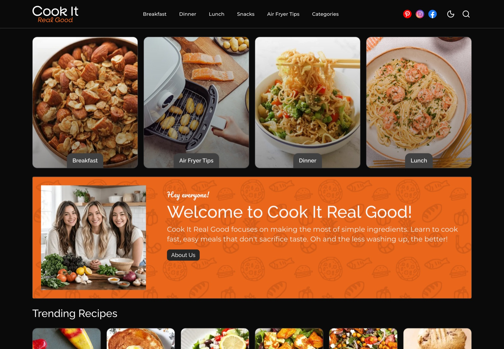
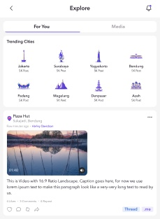

Think first.Build in parallel.Write it down.
Rezi Saktiva, fullstack product builder in Bandung. I make the architecture calls; a team of AI agents does the typing.
Rezi
Saktiva
I’m a fullstack product builder based in Bandung, with more than six years of full-stack work behind me. These days I run a pipeline of AI subagents from the first question to the final deploy, while the architecture and the final call stay with me.
Before I build anything I ask whether it should exist: can it be done, is it worth doing, and what can honestly be left out. Then I write the answer down, so the next person, or the next agent, doesn’t have to guess.
Now at Insvire Technologies
Read the method →Work
so far




Frame
Shape
Build
Release
Pin down the problem, set the scope, and say no to what doesn’t belong.
Gather research and alternatives so I can review them, not take them on faith.
Design the architecture and the contracts between its parts. Direction is not delegated.
Draft components and layout options inside a system that’s already locked.
Own the API contracts and module boundaries, and review every pull request.
Parallel subagents write code and tests against small, well-defined tasks.
Approve the release and update the record, including anything decided late.
Run the deploy checklist and bring the docs in line with what’s live.
The paper
trail
Three real entries from this project’s own decision records, each with what was weighed and what was turned down. Old plans are marked superseded, never erased.
- Context
- Product knowledge and project mechanics ended up in one folder, so agents kept writing status into documents that should have stayed still.
- Decision
- What the product is lives in product-discovery/. How the work runs — rules, tasks, ADRs — lives in project-os/. Skills live only in .cursor/skills/.
- Weighed and rejected
- One docs/ folder for everything · Skills kept outside Cursor
- Context
- With no product baseline, a later phase could quietly shift the MVP or pull the whole case catalogue into the first release.
- Decision
- Product Baseline v1.0 is locked: a lean hybrid surface, MoSCoW priorities, and the order R1 Clarity → R2 light magnet → R3. Material changes need a new ADR.
- Weighed and rejected
- Wait for wireframes · Full hybrid in the MVP · A baseline without the R2 order
- Context
- HTML mockups and production code lived side by side. Keeping them in step slowed every iteration and tied the team to a stack it had already left.
- Decision
- Mockups are archived. The visual truth is production code plus locked direction, and design iterates straight in Next.js.
- Weighed and rejected
- Mockups stay the source of truth · Retire one page only · Move the truth to Figma